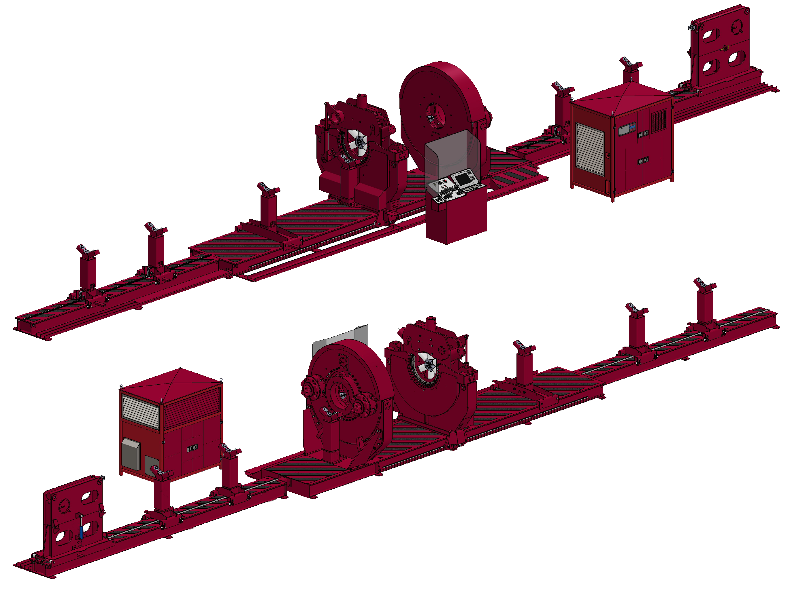

Descripción
Equipo de taller de alta especialización diseñado para la conexión y desconexión de tubería con roscas premium y API, así como para el armado y desarmado de herramientas de terminación, equipos de flotación, acoplamientos y sistemas de cementación.
La Fully Rotational Torque Machine permite ejecutar operaciones en componentes de distintos diámetros, incluyendo colgadores de revestimiento (liners), garantizando precisión, eficiencia y control en cada proceso.
Su diseño automatizado y capacidades de integración la convierten en una solución confiable para optimizar operaciones críticas dentro del sector petrolero.
APLICACIONES OPERATIVAS
- Conexión y desconexión de tubería de revestimiento y producción
- Armado y desarmado de herramientas de terminación
- Manejo de equipos de flotación y cementación
- Preparación y verificación de componentes previo a envío a campo
- Operaciones con conexiones premium y estándar API
Especificaciones Técnicas
- Rango de apertura: 2.375” a 22”
- Rango de torque: 100 a 100,000 lbs
- Velocidad de roscado: 0.3 a 5 RPM
- Longitud total del equipo: 21.44 m
- Función de apertura de cabezal fijo superior, que permite sujetar herramientas conectadas de diámetro sobredimensionado que no pueden pasar a través de los cabezales de sujeción convencionales.

Características Funcionales Clave
- Sistema Push & Pull Tool, que permite un posicionamiento preciso durante las operaciones de conexión y desconexión.
- Sensores de elevación en gatos (jacks) con memoria, que garantizan repetibilidad y control en la posición de trabajo.
- Sistema MirrorLink con cámara panorámica, que permite visualizar la operación de apriete desde una zona segura, reduciendo la exposición al riesgo.
- Cabezales flotantes, diseñados para trabajar con equipos cuyo roscado se encuentra fuera de centro.
- Gráfico de apriete en tiempo real, que permite monitorear y validar los parámetros de torque durante la operación.

Beneficios
- Aplicable a una amplia gama de conexiones roscadas utilizadas en operaciones de perforación y terminación de pozos.
- Compatibilidad con conexiones premium (VAM, Tenaris) y estándares API, asegurando la integridad de las roscas.
- Reducción de tiempos operativos de hasta un 90% en procesos de enrosque, en comparación con métodos convencionales.
- Sistema totalmente automatizado y digitalizado, que permite control preciso de torque, monitoreo en tiempo real y alta repetibilidad.
- Integración con grúa viajera de 10 toneladas, reduciendo riesgos de daño a equipos y optimizando maniobras de carga y descarga.
- Disminución del error humano y mejora en la confiabilidad de las conexiones.
- Incremento en la seguridad operativa al reducir la exposición del personal en maniobras críticas.
- Protección de componentes y mayor vida útil al evitar sobre-torque o daños en las conexiones.
- Estandarización de procesos que mejora la eficiencia y calidad del servicio.
Seguridad y Control Operativo
- Operación bajo procedimientos controlados.
- Monitoreo digital de parámetros críticos.
- Reducción de exposición del personal a zonas de riesgo.
- Integración de sistemas visuales para operación segura.
- Cumplimiento con estándares de seguridad aplicables a la industria.